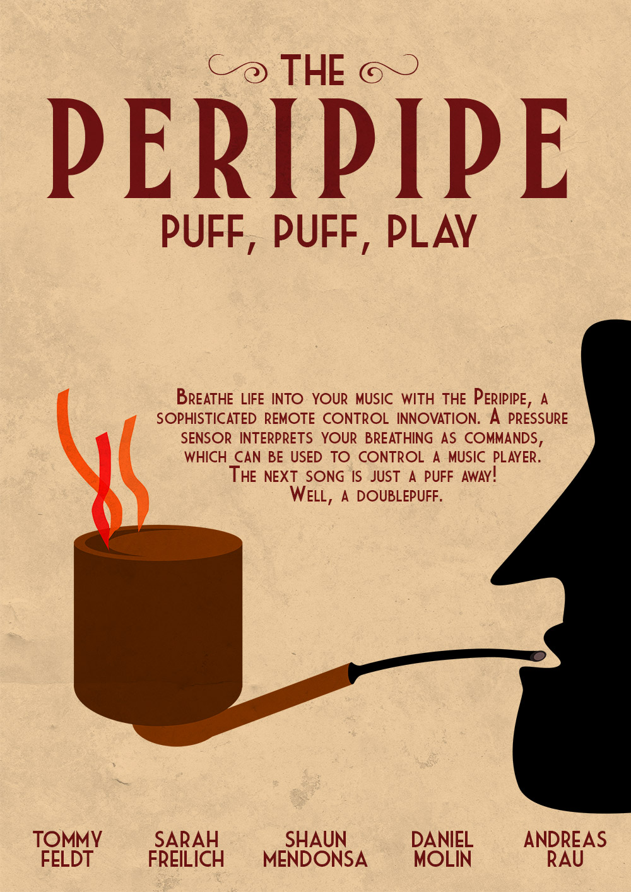
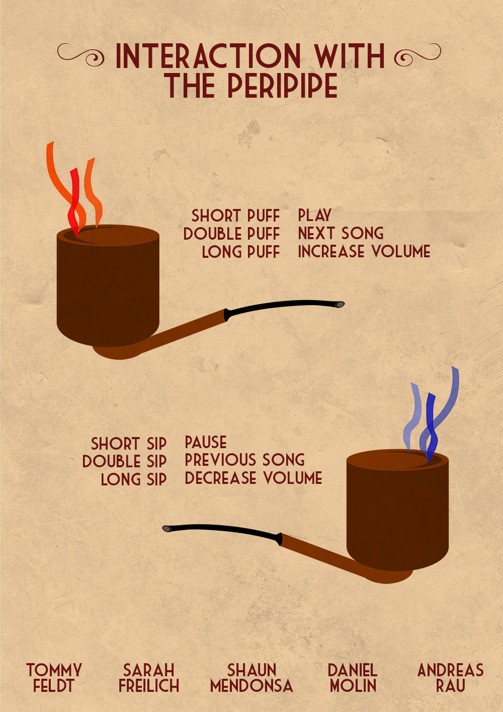
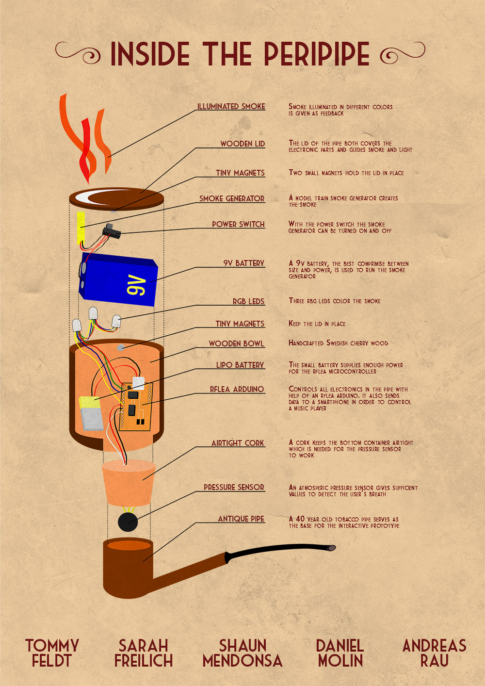
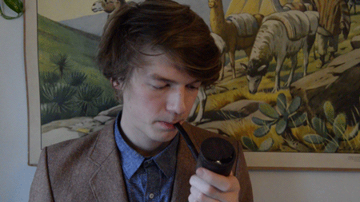

The design of The Peripipe is based on breath control, using sips and puffs as control commands. An atmospheric pressure sensor in the Peripipe senses changes in the air pressure. Based on these changes, the pipe determines which kind of interaction has been performed and wirelessly sends commands to a smartphone running the music player. The Peripipe also provides fumeovisual feedback by using color-illuminated smoke. The underlying motivation for creating the Peripipe was to explore different aspects of mobility, physicality, natural materials design and ways to increase the emotional attachment between user and technology.
A tangible remote control in the shape of a wooden tobacco pipe. By changing the air pressure within the pipe with your mouth, you can control your music player on your phone or computer.



My Roles
Art Direction, product design, storyboarding, editing, graphic design and woodworking.
Team members
Tommy Feldt, Shaun Mendonsa, Daniel Molin, Andreas Rau and me.
